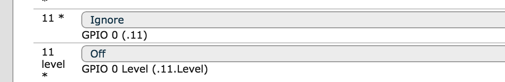
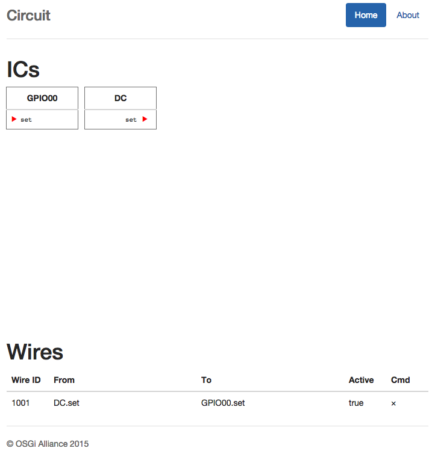
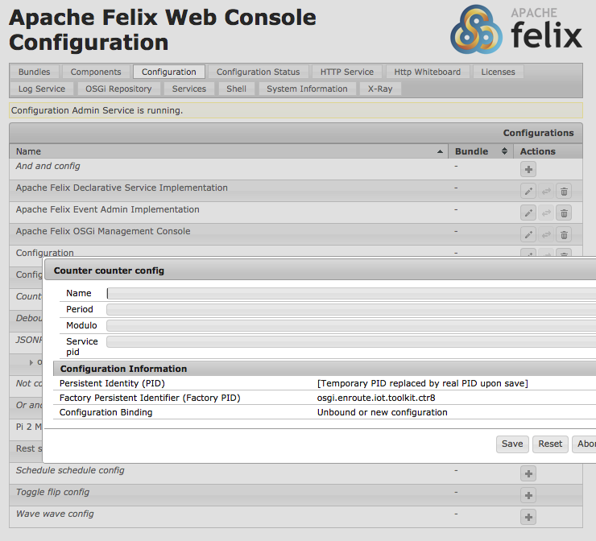
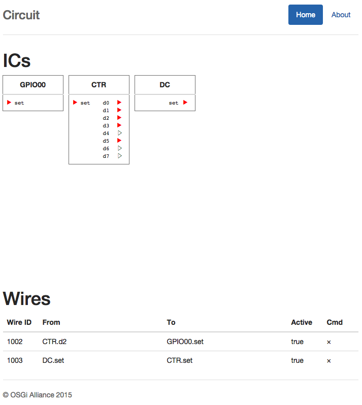
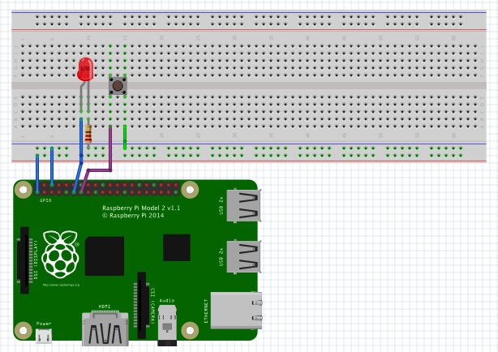
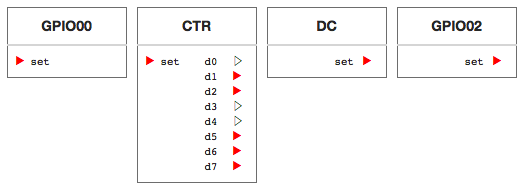
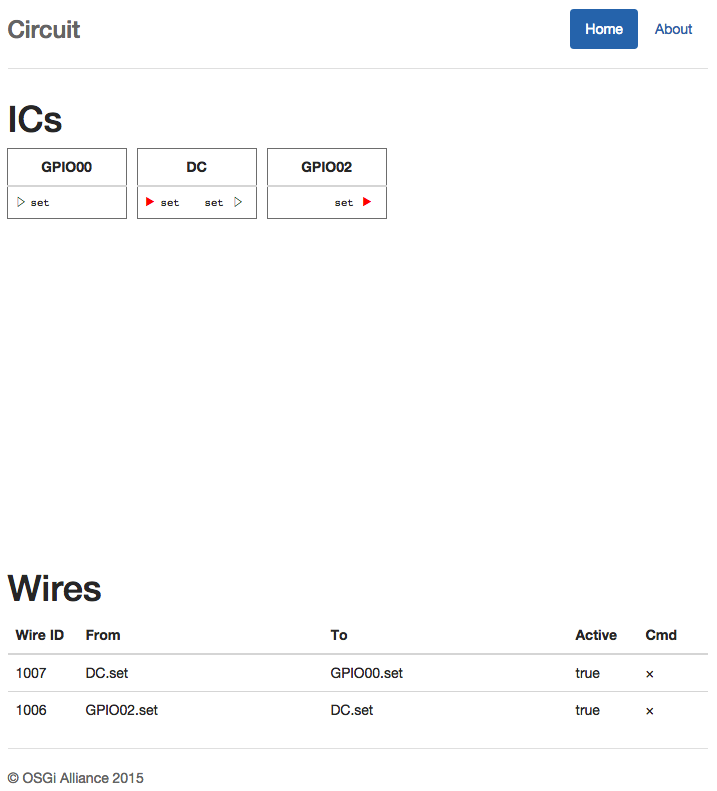

Developing
What You Will Learn
In the previous section we used the Pi4j library to blink a LED. It is tempting to continue to explore the Pi with this library but in an OSGi world we need to share our resources with other bundles. The Pi4J library is a fantastic library to control the Raspberry Pi but it is just not very good in sharing control between a number of bundles. In an OSGi world, we need to share. For this reason, the OSGi enRoute distro contains the osgi.enroute.iot.circuit API. This allows us to use Configuration Admin and Webconsole to define what Raspberry Pi pins are used for what bundles.
In this part we therefore let the LED blink and use a hardware switch to receive hardware events.
Before you continue, please read the description of the osgi.enroute.iot.circuit service.
Led Command
The Apache Felix Gogo shell is a very nice way to explore a new environment. So let’s create a simple led command that takes a boolean. If it is true, the LED should be on, otherwise it should be false. Creating a Gogo command can hardly be simpler. You have to declare two service properties:
osgi.command.scope– The scope. The scope can be used to make a command unique. For example if there are multiplefoocommands, thena:fooandb:foocan be used to discriminate between theaandbcommand providers.osgi.command.function– The name of the function. This must be a public function. The arguments of this function will be filled with the parameters from the command line after proper conversion.
So our component should look like:
@Component(
service = IC.class,
property = {
Debug.COMMAND_SCOPE+"=domo",
Debug.COMMAND_FUNCTION+"=led"
}
)
public class DomoticaCommand extends ICAdapter<Void, Digital> {
public void led(boolean on) throws Exception {
out().set(on);
}
@Reference
protected void setCircuitBoard(CircuitBoard cb) {
super.setCircuitBoard(cb);
}
}
On the command line we can now control the led:
> led true
> led false
Ok, fooled you. This does not do anything yet since we’ve not wired our component yet. We need to prepare the environment first.
Adding The Gogo Commands
There is one more bundle that we should add to the osgi.enroute.iot.domotica.bndrun file:
osgi.enroute.iot.circuit.command
The command bundle provides us with Gogo commands to list the ICs and maintain the wires. The application does the same, but then with an HTML/Javascript front end using drag & drop.
You can add this bundle in the osgi.enroute.iot.domotica.bndrun file. Click on the Run tab, select the bundle in Avaliable Bundles list and drag it to the right and drop it on the Run Requirements, then save and close. Then goto the debug.bndrun file, resolve & save it.
Using the Gogo Commands
If things worked out, you now should be able to see our IC:
> ics
{"deviceId":"DomoticaCommand", "type":"osgi.enro...caCommand", \
"name":"DomoticaCommand", "icon":null, "inputs":[], \
"outputs":[{"name":"set", "type":"boolean", "value":false}]}
> wires
>
> circuit
wires – Show the existing wires
ics – Show the current ICs
connect <from> <pin> <to> <pin> – Connect two ics
gpo <id> – Create a test output to the Console
clock <id> – Create a test clock
disconnect id – Disconnect a write
Feel free to send a pull request to improve the output. That said, the GUI looks better.
Configuring the Raspberry Pi
Remember the osgi.enroute.iot.pi bundle with the Gpio Controller? Well, this bundle works very well with the Circuit Board service. It detects the Pi model and then allows this Pi to be configured via Configuration Admin. Since it provides Metatypes, we can now interactively configure it with Webconsole.
In our previous example we used GPIO00 on pin 11 of the Pi’s connector. If we call up the Webconsole and go to the Configuration tab we can click on the Pi 2 Model B entry. This opens a LARGE form. This form contains multiple configuration properties for each useful pin on the connector. Let’s leave this overwhelming large form as is and focus on pin 11 or GPIO00.
.
We need to set the following fields:
- GPIO 0 – This popup menu allows us to select the mode:
- ignore – Ignore this pin completely, it is somebody’s elses responsibility
- none – Set to default state
- out – Set the pin to output
- in – Set the pin to input
- GPIO 0 Level – This popup selects options, the differ if the pin is set to output or input
- off – For input, no pull ups. For output no inverter
- high – For input, pull up high. For output use an inverter for the actual output (also initial state)
- low – For input, pull low. For output, use the normal signal (also initial state)
We need GPIO00 as an output, so select the Out entry in the first popup menu of pin 11. Set the level menu to low. Then save the form. This will create a new IC for the Raspberry Pi GPIO00 pin. You can see this IC with the following commands.
If we now look in the Gogo shell we see 2 ICs:
> ics
{"deviceId":"DomoticaCommand", "type":"osgi.enro...caCommand", ...
{"deviceId":"GPIO00", "type":"osgi.enro...ev1Impl$1", "name":"1", ...
>
Note that we create an IC for each pin. The reason is that the GPIO chip in the Raspberry Pi is very flexible. It would be impossible to describe it as one IC since many pins vary significantly in function. How would you parameterize input or output in this model? So each pin (or group of pins) is modeled as its own IC.
Controlling the LED
Time to go back to our LED. If we list the ICs, we can spot the value of the outputs (look at "value":false):
> ics
{"deviceId":"DomoticaCommand", "type":"osgi.enro...caCommand", \
"name":"DomoticaCommand", "icon":null, "inputs":[], \
"outputs":[{"name":"set", "type":"boolean", "value":false}]
}
>
So if we execute out led command we should be able to change it:
> led true
> ics
{"deviceId":"DomoticaCommand", "type":"osgi.enro...caCommand", \
"name":"DomoticaCommand", "icon":null, "inputs":[], \
"outputs":[{"name":"set", "type":"boolean", "value":true}]
}
>
So this worked. Now the trick is to connect the DomoticaCommand set pin to the GPIO00 set pin.
> connect DomoticaCommand set GPIO00 set
{"wireId":1001, "fromDevice":"DomoticaCommand", "fromPin":"set", \
"toDevice":"GPIO00", "toPin":"set", "wired":false}
>
Miracles! Well, if your LED is now glowing brightly red, otherwise you’re in for some debugging.
We can now control the LED with the led command:
> led false
> led true
> led false
> led true
> led false
> led true
Adding the GUI
So one more bundle that we should add to the osgi.enroute.iot.domotica.bndrun file:
osgi.enroute.iot.circuit.application
You can add this bundle in the osgi.enroute.iot.domotica.bndrun file. Click on the Run tab, select the bundle in Avaliable Bundles list and drag it to the right and drop it on the Run Requirements, then save and close. Then goto the debug.bndrun file, resolve & save it.
This bundle provides a HTML/Javascript GUI on the Pi’s HTTP server. This server is generally located at the Pi’s IP number on port 8080.
http://192.168.2.4/osgi.enroute.iot.circuit
If you go to that page, you should be able to see the two ICs we created with their corresponding wire. The state of the LED is also indicated.
.
We could have some fun, just to demo the GUI application. The IoT Circuit Toolkit also contains a number of standard components. Let’s create an 8 bit counter and connect one of the d0..d7 to the LED, this will blink the LED.
To do this, go to the Webconsole, and click on the Configuration tab. Find the Counter counter config entry, and click on the + button. This opens a small menu. Just name the component and safe it.
.
In the Circuit GUI you will see the counter showing up. You can drag one of the d0..d7 on the counter’s IC to the GPIO00 IC set pin. You should then see this reflected in your real world LED.
You could delete the wire from the DomoticaCommand (DC) set pin and create a wire between that pin and the counter’s set pin. This set pin on the counter is an enable. If it is false, it will stop the counter. Once you created that wire you can start stop the counter with the led command.
.
And Now an Input …
So far we’ve created an output but now for an input. Though you can just use a wire that you connect between an input port and ground (if you make the pull up level high), we will use a little pushbutton switch. We connect one side of the switch to the ground, the other to GPIO02 (in Pi4J terms), this is pin 13, adjacent to the output we’ve used for our LED so far.

Next step is to configure our Raspberry Pi to turn pin 13 into an input with the name GPIO02. Go to the Webconsole, select the Raspberry Pi configuration, and change pin 13 into:
- An input
- A high level. Since we connected the switch to the ground, the other pin will float when the switch is not pressed. By specifying a high level we get a “default” value of 1.
Save the configuration. You should now have a screen for the Circuit Application like this:

If you press the button, the state of the GPIO02 IC should change. You can now wire the output set pin of GPIO02 to any of the input pins. For example, you could use it to enable the counter. However, that is not so much fun. More fun is to wire it to our DomoticaCommand. However, we defined no inputs. As an example, lets make a component that bkinks the LED for 5 seconds when you press the button.
First the code:
@Component(service = IC.class, property = {Debug.COMMAND_SCOPE+"=domo", Debug.COMMAND_FUNCTION+"=led"})
public class DomoticaCommand extends ICAdapter<Digital, Digital> implements Digital {
private AtomicBoolean busy = new AtomicBoolean();
private Scheduler scheduler;
private int count;
private Closeable schedule;
@Override
public void set(boolean value) throws Exception {
if ( value && busy.getAndSet(true) == false) {
count = 10;
schedule = scheduler.schedule( ()-> {
if ( count-- <= 0) {
busy.set(false);
schedule.close();
}
led( (count & 1) == 0);
}, 500);
}
}
public void led(boolean on) throws Exception {
out().set(on);
}
@Reference protected void setCircuitBoard(CircuitBoard cb) {
super.setCircuitBoard(cb);
}
@Reference void setScheduler(Scheduler scheduler) {
this.scheduler = scheduler;
}
}
When we receive an input event (the set method), we check if we’re already busy and if the button was high. If so, we set a counter and create a schedule. This schedule kills itself after ten times and reverses the output of the LED. Simple.
So all you have to do now is to wire the GPIO02.set output pin to the DC.set input pin. The DC.set output pin is then wired to the LED. You might want to delete the configuration for the counter because we don’t need it. We then have the following screen:

What You Should Have Learned
In this section we learned that using the GPIOs directly is wrong because we need to share these singleton resources with other bundles. The OSGi enRoute Circuit Board API provides a means to create IC components that declare their inputs and outputs with methods on a Java interface; a bundle can then wire the pins of these ICs together.
Wirings are stored in Configuration Admin and in general components are configured using Configuration Admin.
What’s Next?
Next is back to the start page. We intend to extend this tutorial over time.